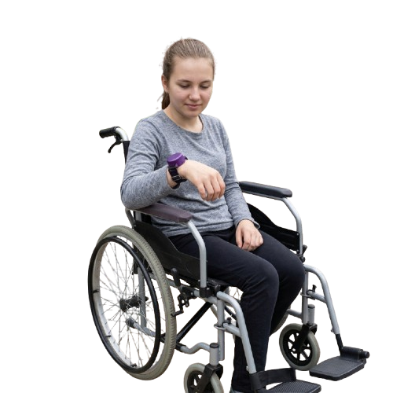
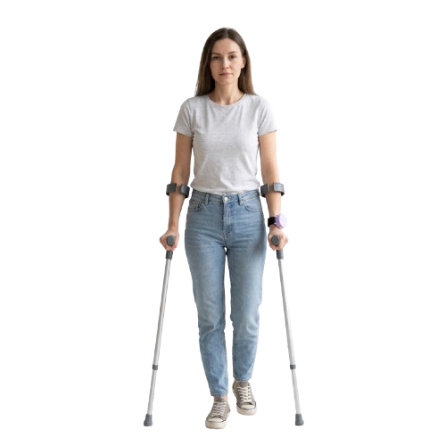

Galería





SafeStep combina un sensor de movimiento con inteligencia artificial entrenada específicamente para reconocer una caída — y avisar a quien cuida de ti en el momento en que ocurre.
Todo el proceso ocurre en segundos, sin que la persona tenga que hacer nada.
El sensor MPU6050 registra el movimiento del cuerpo de forma continua.
Un modelo de IA entrenado con Edge Impulse identifica si el patrón corresponde a una caída.
La app SafeStep recibe la notificación al instante, incluso en segundo plano.


Sí, necesita conexión WiFi para enviar la alerta a la app. Sin conexión, el sensor sigue detectando caídas, pero la notificación no puede enviarse hasta que el dispositivo se reconecte.
Estamos afinando esta cifra con pruebas de uso real. Pronto la vas a encontrar aquí.
La app te notifica que el dispositivo perdió conexión, para que sepas revisarlo, aunque en ese momento no pueda enviar alertas de caída.
Cada dispositivo funciona de forma independiente. Puedes tener varios, cada uno vinculado a su propia app.